World Ocean Atlas 2018
Jens Daniel Müller
30 November, 2020
Last updated: 2020-11-30
Checks: 7 0
Knit directory: emlr_obs_preprocessing/
This reproducible R Markdown analysis was created with workflowr (version 1.6.2). The Checks tab describes the reproducibility checks that were applied when the results were created. The Past versions tab lists the development history.
Great! Since the R Markdown file has been committed to the Git repository, you know the exact version of the code that produced these results.
Great job! The global environment was empty. Objects defined in the global environment can affect the analysis in your R Markdown file in unknown ways. For reproduciblity it’s best to always run the code in an empty environment.
The command set.seed(20200707) was run prior to running the code in the R Markdown file. Setting a seed ensures that any results that rely on randomness, e.g. subsampling or permutations, are reproducible.
Great job! Recording the operating system, R version, and package versions is critical for reproducibility.
Nice! There were no cached chunks for this analysis, so you can be confident that you successfully produced the results during this run.
Great job! Using relative paths to the files within your workflowr project makes it easier to run your code on other machines.
Great! You are using Git for version control. Tracking code development and connecting the code version to the results is critical for reproducibility.
The results in this page were generated with repository version cd676e8. See the Past versions tab to see a history of the changes made to the R Markdown and HTML files.
Note that you need to be careful to ensure that all relevant files for the analysis have been committed to Git prior to generating the results (you can use wflow_publish or wflow_git_commit). workflowr only checks the R Markdown file, but you know if there are other scripts or data files that it depends on. Below is the status of the Git repository when the results were generated:
Ignored files:
Ignored: .Rhistory
Ignored: .Rproj.user/
Ignored: data/
Unstaged changes:
Modified: code/Workflowr_project_managment.R
Note that any generated files, e.g. HTML, png, CSS, etc., are not included in this status report because it is ok for generated content to have uncommitted changes.
These are the previous versions of the repository in which changes were made to the R Markdown (analysis/read_World_Ocean_Atlas_2018.Rmd) and HTML (docs/read_World_Ocean_Atlas_2018.html) files. If you’ve configured a remote Git repository (see ?wflow_git_remote), click on the hyperlinks in the table below to view the files as they were in that past version.
| File | Version | Author | Date | Message |
|---|---|---|---|---|
| Rmd | cd676e8 | jens-daniel-mueller | 2020-11-30 | created global parameterization file params_global.rds |
| html | 825309e | jens-daniel-mueller | 2020-11-27 | Build site. |
| Rmd | 4dd5bda | jens-daniel-mueller | 2020-11-27 | correct source link, basinmask and plotting function |
| html | 58359ac | jens-daniel-mueller | 2020-11-27 | Build site. |
| Rmd | 2f37595 | jens-daniel-mueller | 2020-11-27 | first rebuild after splitting the preprocessing part |
| Rmd | cb7a9ca | jens-daniel-mueller | 2020-11-27 | linked to local paths on server |
| Rmd | 92e10aa | Jens Müller | 2020-11-27 | Initial commit |
| html | 92e10aa | Jens Müller | 2020-11-27 | Initial commit |
library(tidyverse)
library(tidync)
library(reticulate)
library(oce)
library(gsw)
library(geosphere)
library(patchwork)path_functions <- "/nfs/kryo/work/updata/emlr_cant/utilities/functions/"
path_files <- "/nfs/kryo/work/updata/emlr_cant/utilities/files/"
path_woa2018 <- "/nfs/kryo/work/updata/woa2018/"
path_preprocessing <- "/nfs/kryo/work/updata/emlr_cant/observations/preprocessing/"CAVEAT: Please note that neutral density should be calculated in this script, but is currently not, because the required Python code is not yet running on the IAC server. Therefore, the desired output file was manually replaced with a locally generated version.
1 Data source
- Data source: World Ocean Atlas 2018
2 Masks
2.1 Land
2.1.1 Read mask
The land sea mask with 1x1° resolution from the file landsea_01.msk was used.
landsea_01 <- read_csv(
paste(
path_woa2018,
"masks/landsea_01.msk",
sep = ""),
skip = 1,
col_types = list(.default = "d"))2.1.2 Label
According to the WOA18 documentation document:
“The landsea_XX.msk contains the standard depth level number at which the bottom of the ocean is first encountered at each quarter-degree or one-degree square for the entire world. Land will have a value of 1, corresponding to the surface.”
The landmask was derived as coordinates with value 1.
landmask <- landsea_01 %>%
mutate(region = if_else(Bottom_Standard_Level == "1",
"land", "ocean")) %>%
select(-Bottom_Standard_Level)
landmask <- landmask %>%
rename(lat = Latitude,
lon = Longitude) %>%
mutate(lon = if_else(lon < 20, lon + 360, lon))
landmask <- landmask %>%
filter(region == "land",
lat >= params_global$lat_min,
lat <= params_global$lat_max) %>%
select(-region)
rm(landsea_01)2.2 Basins
2.2.1 Read mask
The surface mask (0m) with 1x1° resolution from the file basinmask_01.msk was used.
basinmask_01 <- read_csv(
paste(
path_woa2018,
"masks/basinmask_01.msk",
sep = ""),
skip = 1,
col_types = list(.default = "d"))
basinmask_01 <- basinmask_01 %>%
select(Latitude:Basin_0m) %>%
mutate(Basin_0m = as.factor(Basin_0m)) %>%
rename(lat = Latitude, lon = Longitude)2.2.2 Labels
According to WOA FAQ website and WOA18 documentation, number codes in the mask files were used to assign ocean basins as follows:
Atlantic Ocean:
- 1: Atlantic Ocean
- 10: Southern Ocean between 63°W and 20°E
- 11: Arctic Ocean (restricted by northern latitude limit 65N)
Indian Ocean:
- 3: Indian Ocean
- 10: Southern Ocean between 20°E and 147°E
- 56: Bay of Bengal
Pacific Ocean:
- 2: Pacific Ocean
- 10: Southern Ocean between 147°E and 63°W
- 12: Sea of Japan
For eMLR model fitting and mapping, Indian and Pacific Ocean were combined as Indo-Pacific.
# assign basin labels
basinmask_01 <- basinmask_01 %>%
filter(Basin_0m %in% c("1", "2", "3", "10", "11", "12", "56")) %>%
mutate(
basin_AIP = "none",
basin_AIP = case_when(
Basin_0m == "1" ~ "Atlantic",
Basin_0m == "10" & lon >= -63 & lon < 20 ~ "Atlantic",
Basin_0m == "11" ~ "Atlantic",
Basin_0m == "3" ~ "Indian",
Basin_0m == "56" ~ "Indian",
Basin_0m == "10" & lon >= 20 & lon < 147 ~ "Indian",
Basin_0m == "2" ~ "Pacific",
Basin_0m == "12" ~ "Pacific",
Basin_0m == "10" &
lon >= 147 | lon < -63 ~ "Pacific"
)
) %>%
mutate(basin = if_else(basin_AIP == "Atlantic",
"Atlantic",
"Indo-Pacific")) %>%
select(-Basin_0m)
# apply northern latitude boundary
basinmask_01 <- basinmask_01 %>%
filter(lat <= params_global$lat_max)
# harmonize lon scale
basinmask_01 <- basinmask_01 %>%
mutate(lon = if_else(lon < 20, lon + 360, lon))2.2.3 Map
map <-
ggplot() +
geom_raster(data = landmask,
aes(lon, lat), fill = "grey80") +
coord_quickmap(expand = 0) +
theme(axis.title = element_blank())
map +
geom_raster(data = basinmask_01,
aes(lon, lat, fill = basin_AIP)) +
scale_fill_brewer(palette = "Dark2") +
theme(legend.position = "top",
legend.title = element_blank())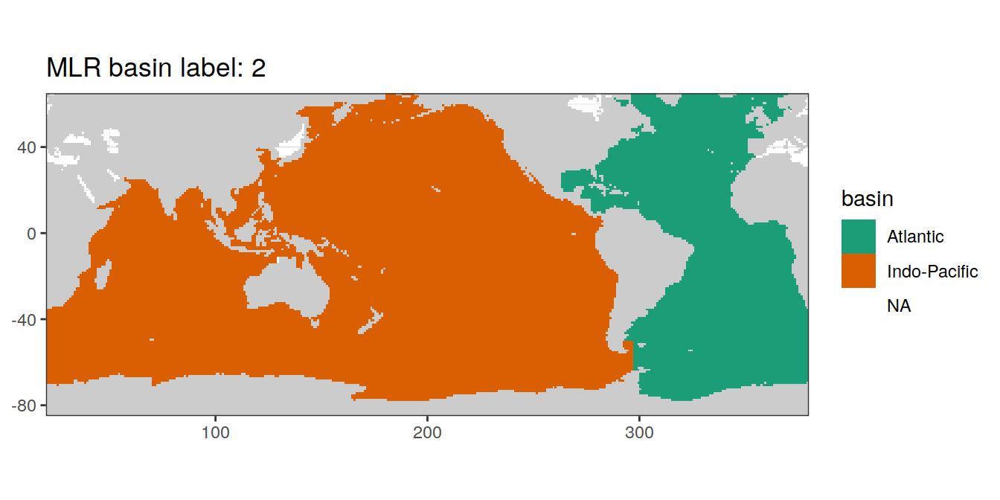
map %>%
write_rds(
paste(
path_files,
"map_landmask_WOA18.rds",
sep = ""
)
)2.3 Global section
To plot sections from the North Atlantic south to the Southern Ocean, around Antartica and back North across the Pacific Ocean, corresponding coordinates were subsetted from the basin mask and distances between coordinate grid points calculated.
section <- basinmask_01 %>%
select(lon, lat)
Atl_NS <- section %>%
filter(
lon == params_global$lon_Atl_section,
lat <= params_global$lat_section_N,
lat >= params_global$lat_section_S
) %>%
arrange(-lat)
Atl_SO <- section %>%
filter(lon > params_global$lon_Atl_section,
lat == params_global$lat_section_S) %>%
arrange(lon)
Pac_SO <- section %>%
filter(lon < params_global$lon_Pac_section,
lat == params_global$lat_section_S) %>%
arrange(lon)
Pac_SN <- section %>%
filter(
lon == params_global$lon_Pac_section,
lat <= params_global$lat_section_N,
lat >= params_global$lat_section_S
) %>%
arrange(lat)
section_global_coordinates <- bind_rows(Atl_NS,
Atl_SO,
Pac_SO,
Pac_SN)
section_global_coordinates <- section_global_coordinates %>%
mutate(lon_180 = if_else(lon > 180, lon - 360, lon))
section_global_coordinates <- section_global_coordinates %>%
mutate(dist_int = distGeo(cbind(lon_180, lat)) / 1e6) %>%
mutate(dist = cumsum(dist_int))
section_global_coordinates <- section_global_coordinates %>%
select(lon, lat, dist) %>%
drop_na()
rm(Atl_NS, Atl_SO, Pac_SN, Pac_SO, section)map +
geom_point(data = section_global_coordinates,
aes(lon, lat, col = dist)) +
scale_colour_viridis_b(name = "Distance (Mm)") +
theme(legend.position = "top")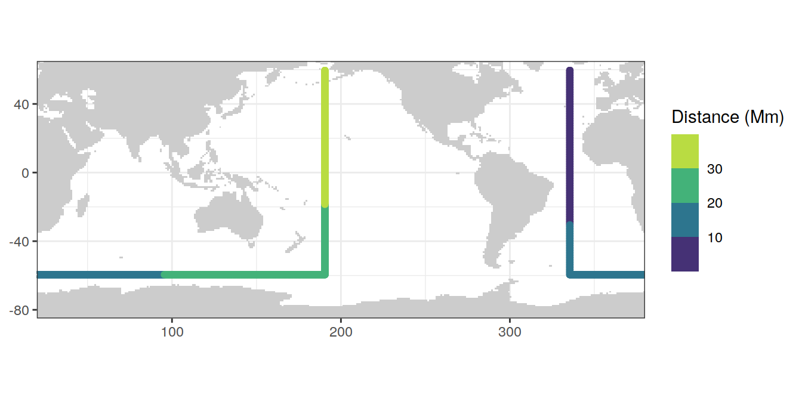
2.4 Write files
basinmask_01 %>%
write_csv(paste(path_files,
"basin_mask_WOA18.csv",
sep = ""))
section_global_coordinates %>%
write_csv(paste(path_files,
"section_global_coordinates.csv",
sep = ""))3 Climatology S and T
Copied from the WOA FAQ website, the file naming conventions is:
PREF_DDDD_VTTFFGG.EXT, where:
- PREF: prefix
- DDDD: decade
- V: variable
- TT: time period
- FF: field type
- GG: grid (5deg- 5°, 01- 1°, 04 - 1/4°)
- EXT: file extention
Short description of two statistical fields in WOA
- Objectively analyzed climatologies are the objectively interpolated mean fields for oceanographic variables at standard - depth levels for the World Ocean.
- The statistical mean is the average of all unflagged interpolated values at each standard depth level for each variable - in each 1° square which contains at least one measurement for the given oceanographic variable.
Here, we use
- Fields: objectively analyzed mean
- Decades: all decades
- Grid: 1 deg resolution
According to the WOA18 documentation document:
What are the units for temperature and salinity in the WOA18?
In situ temperatures used for WOA18 are not converted from their original scale, so there is a mix of IPTS-48, IPTS-68, and ITS-90 (and pre IPTS-48 temperatures). The differences between scales are small (on the order of 0.01°C) and should not have much effect on the climatological means, except, possibly at very deep depths. Values for salinity are on the Practical salinity scale (PSS-78). Pre-1978 salinity values converted from conductivity may have used a different salinity scale. Pre-conductivity salinities use the Knudsen method.
3.1 Read ncdfs
# temperature
WOA18_tem <- tidync(
paste(
path_woa2018,
"temperature/decav/1.00/woa18_decav_t00_01.nc",
sep = ""
)
)
WOA18_tem_tibble <- WOA18_tem %>% hyper_tibble()
WOA18_tem_tibble <- WOA18_tem_tibble %>%
select(tem = t_an, lon, lat, depth) %>%
drop_na() %>%
mutate(lon = if_else(lon < 20, lon + 360, lon))
# salinity
WOA18_sal <- tidync(
paste(
path_woa2018,
"salinity/decav/1.00/woa18_decav_s00_01.nc",
sep = ""
)
)
WOA18_sal_tibble <- WOA18_sal %>% hyper_tibble()
WOA18_sal_tibble <- WOA18_sal_tibble %>%
select(sal = s_an, lon, lat, depth) %>%
drop_na() %>%
mutate(lon = if_else(lon < 20, lon + 360, lon))
rm(WOA18_sal, WOA18_tem)3.2 Join predictors
WOA18_sal_tem <- full_join(WOA18_sal_tibble, WOA18_tem_tibble)
rm(WOA18_sal_tibble, WOA18_tem_tibble)3.3 Apply basin mask
Data outside the WOA18 basin mask were removed for further analysis.
WOA18_sal_tem <- inner_join(WOA18_sal_tem, basinmask_01)3.4 Potential temperature
Potential temperature is calculated as in input variable for the neutral density calculation.
3.4.1 Calculation
WOA18_sal_tem <- WOA18_sal_tem %>%
mutate(THETA = swTheta(salinity = sal,
temperature = tem,
pressure = depth,
referencePressure = 0,
longitude = lon - 180,
latitude = lat))3.4.2 Profile
Example profile from North Atlantic Ocean.
WOA18_sal_tem %>%
filter(lat == params_global$lat_Atl_profile,
lon == params_global$lon_Atl_section) %>%
ggplot() +
geom_line(aes(tem, depth, col = "insitu")) +
geom_point(aes(tem, depth, col = "insitu")) +
geom_line(aes(THETA, depth, col = "theta")) +
geom_point(aes(THETA, depth, col = "theta")) +
scale_y_reverse() +
scale_color_brewer(palette = "Dark2", name = "Scale")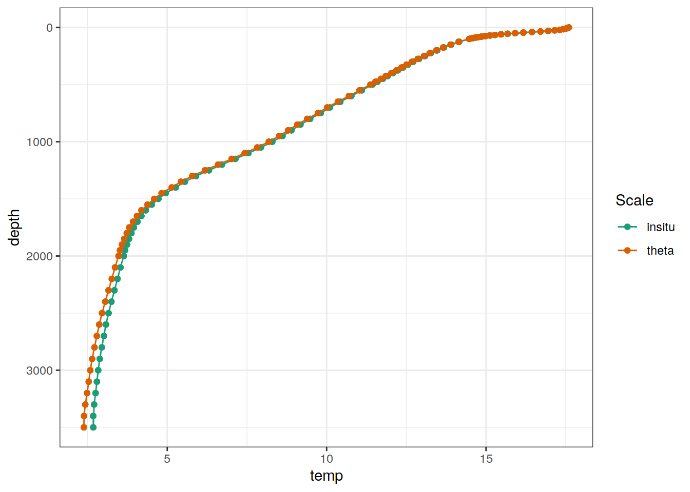
3.5 Neutral density
Neutral density gamma was calculated with a Python script provided by Serazin et al (2011), which performs a polynomial approximation of the original gamma calculation.
3.5.1 Calculation
# calculate pressure from depth
WOA18_sal_tem <- WOA18_sal_tem %>%
mutate(CTDPRS = gsw_p_from_z(-depth,
lat))
# rename variables according to python script
WOA18_sal_tem_gamma_prep <- WOA18_sal_tem %>%
rename(LATITUDE = lat,
LONGITUDE = lon,
SALNTY = sal)
# load python scripts
source_python(paste(
path_functions,
"python_scripts/Gamma_GLODAP_python.py",
sep = ""
))
# calculate gamma
WOA18_sal_tem_gamma_calc <- calculate_gamma(WOA18_sal_tem_gamma_prep)
# reverse variable naming
WOA18_sal_tem <- WOA18_sal_tem_gamma_calc %>%
select(-c(CTDPRS, THETA)) %>%
rename(lat = LATITUDE,
lon = LONGITUDE,
sal = SALNTY,
gamma = GAMMA)
WOA18_sal_tem <- as_tibble(WOA18_sal_tem)
rm(WOA18_sal_tem_gamma_calc, WOA18_sal_tem_gamma_prep)3.5.2 Write file
WOA18_sal_tem %>%
write_csv(paste(path_preprocessing,
"WOA18_sal_tem.csv",
sep = ""))3.6 Temperature plots
Below, following subsets of the climatologies are plotted for all relevant parameters:
- Horizontal planes at 0, 150, 500, 2000m
- Meridional sections at longitudes: 335.5, 190.5, 70.5
Section locations are indicated as white lines in maps.
3.6.1 Surface map
p_map_climatology(
df = WOA18_sal_tem,
var = "tem")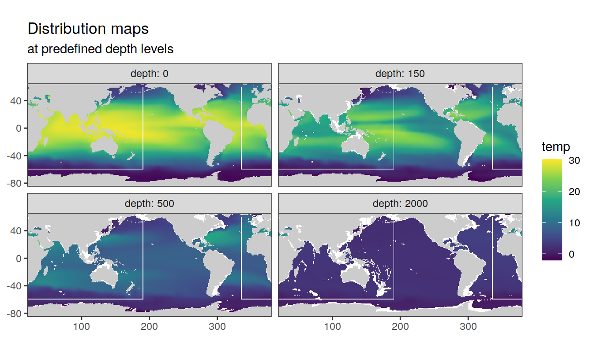
3.7 Salinity plots
3.7.1 Surface map
p_map_climatology(
df = WOA18_sal_tem,
var = "sal")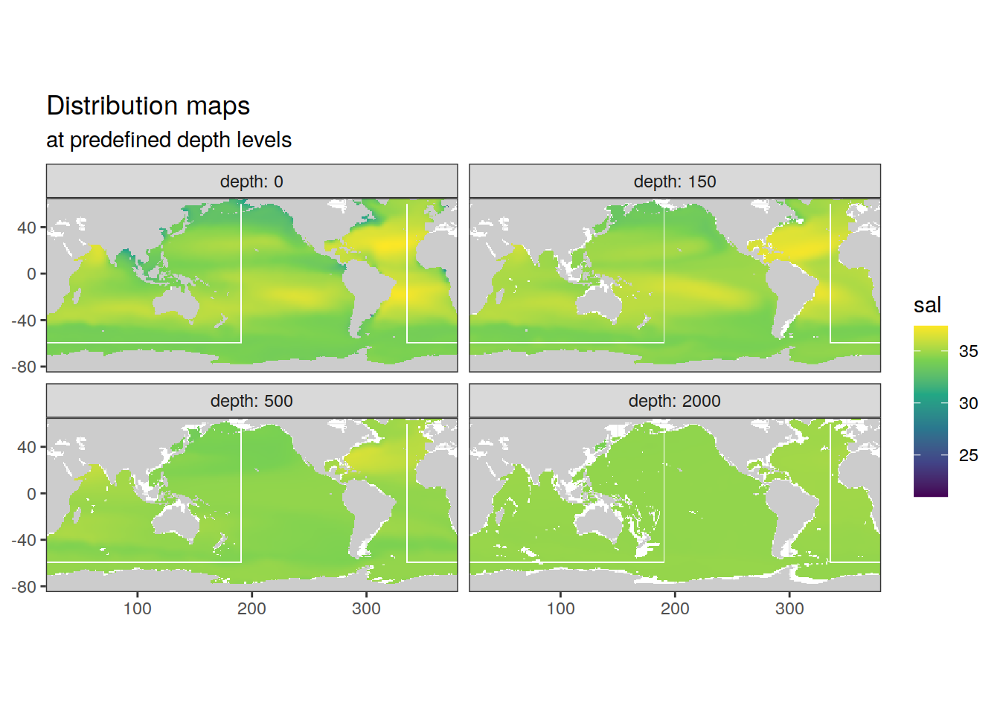
3.8 Neutral density plots
3.8.1 Surface map
p_map_climatology(
df = WOA18_sal_tem,
var = "gamma")3.8.2 Section
p_section_global(
df = WOA18_sal_tem,
var = "gamma")4 Climatology Nuts and O2
4.1 Read ncdfs
# Keep grid cells of WOA18 sal/tem data set, to join with
WOA18_nuts_O2 <-
WOA18_sal_tem %>%
select(lon, lat, depth, basin, basin_AIP)
rm(WOA18_sal_tem)
# create file list
file_list <- c(
paste(path_woa2018, "phosphate/all/1.00/woa18_all_p00_01.nc", sep = ""),
paste(path_woa2018, "nitrate/all/1.00/woa18_all_n00_01.nc", sep = ""),
paste(path_woa2018, "silicate/all/1.00/woa18_all_i00_01.nc", sep = ""),
paste(path_woa2018, "oxygen/all/1.00/woa18_all_o00_01.nc", sep = ""),
paste(path_woa2018, "AOU/all/1.00/woa18_all_A00_01.nc", sep = "")
)
# print(file_list)
# file <- file_list[1]
# read, plot and join data sets while looping over file list
for (file in file_list) {
# open file
WOA18 <- tidync(file)
WOA18_tibble <- WOA18 %>% hyper_tibble()
# extract parameter name
parameter <- str_split(file, pattern = "00_", simplify = TRUE)[1]
parameter <- str_split(parameter, pattern = "all_", simplify = TRUE)[2]
parameter <- paste(parameter, "_an", sep = "")
print(parameter)
WOA18_tibble <- WOA18_tibble %>%
select(all_of(parameter),
lon, lat, depth) %>%
mutate(lon = if_else(lon < 20, lon + 360, lon))
# join with previous WOA data and keep only rows in existing data frame
# this is equal to applying the basinmask
WOA18_nuts_O2 <- left_join(
x = WOA18_nuts_O2,
y = WOA18_tibble)
# plot maps
print(
p_map_climatology(
df = WOA18_nuts_O2,
var = parameter)
)
# plot sections
print(p_section_global(
df = WOA18_nuts_O2,
var = parameter
))
}[1] "p_an"
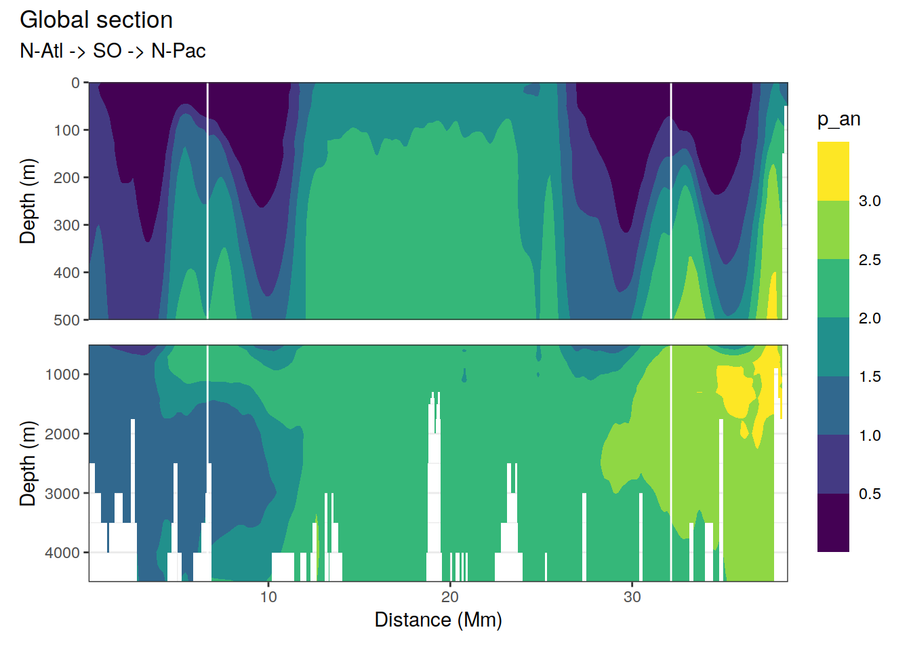
[1] "n_an"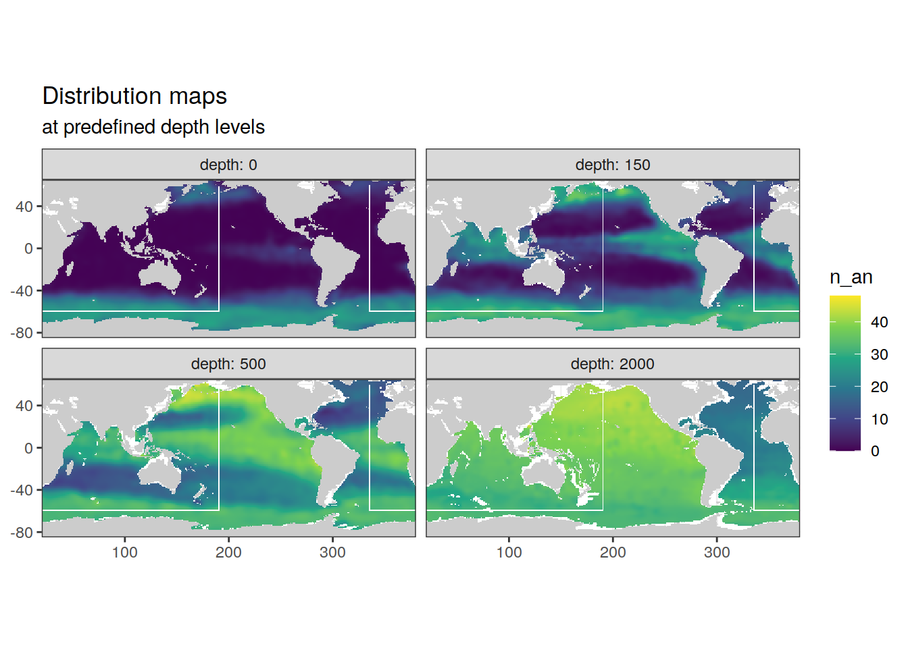
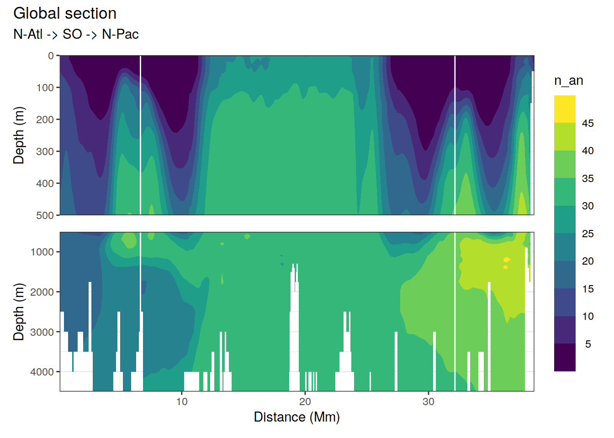
[1] "i_an"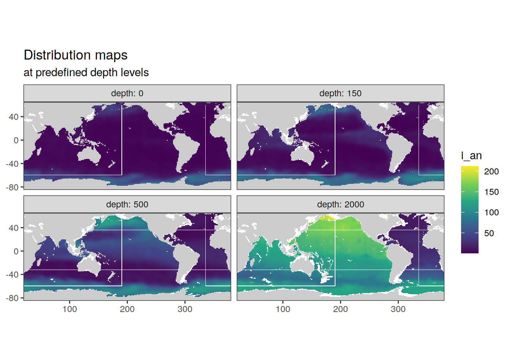
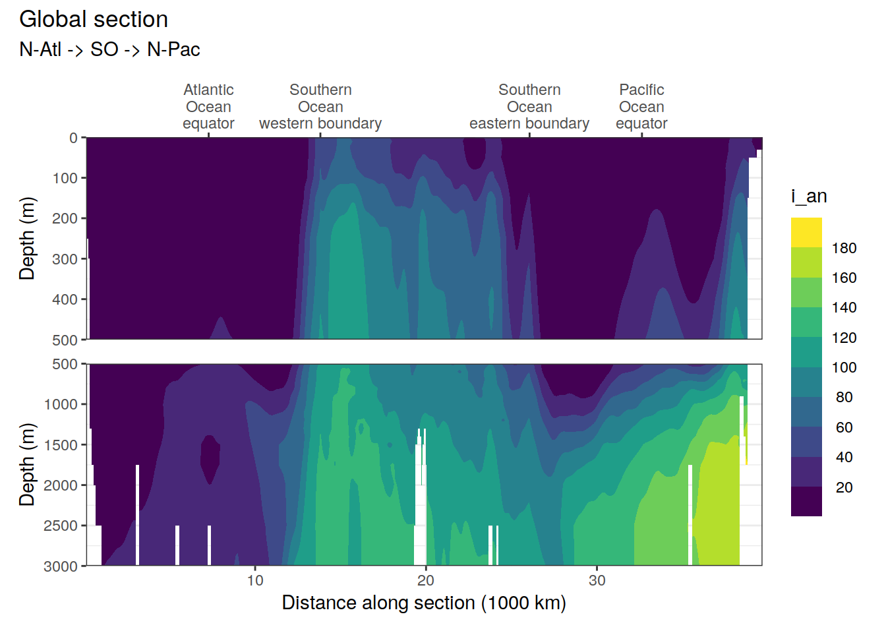
[1] "o_an"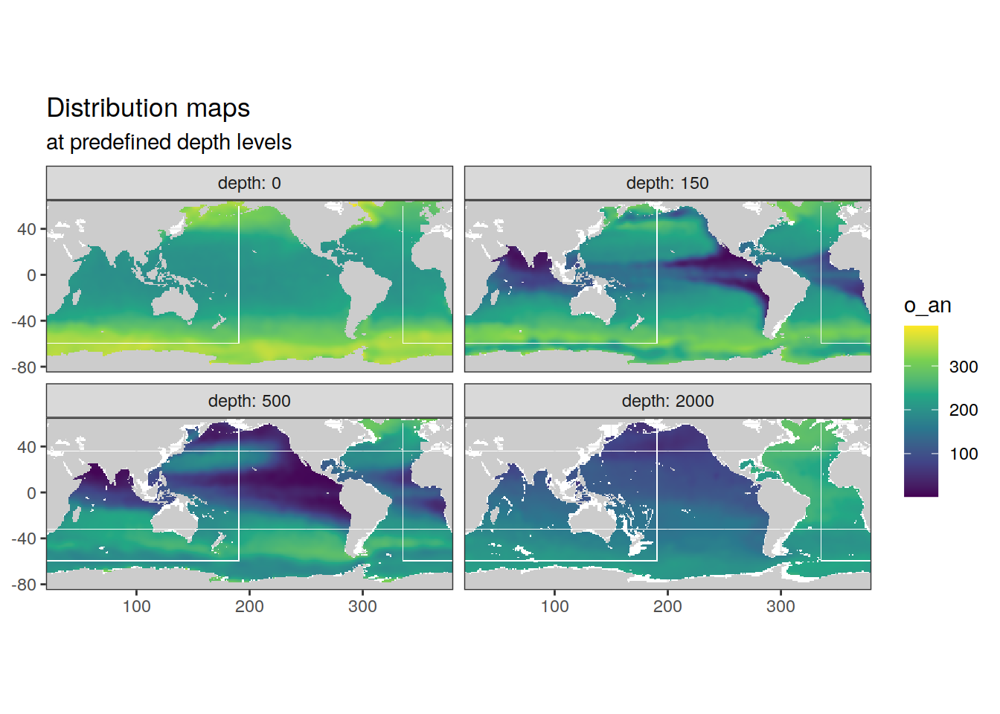
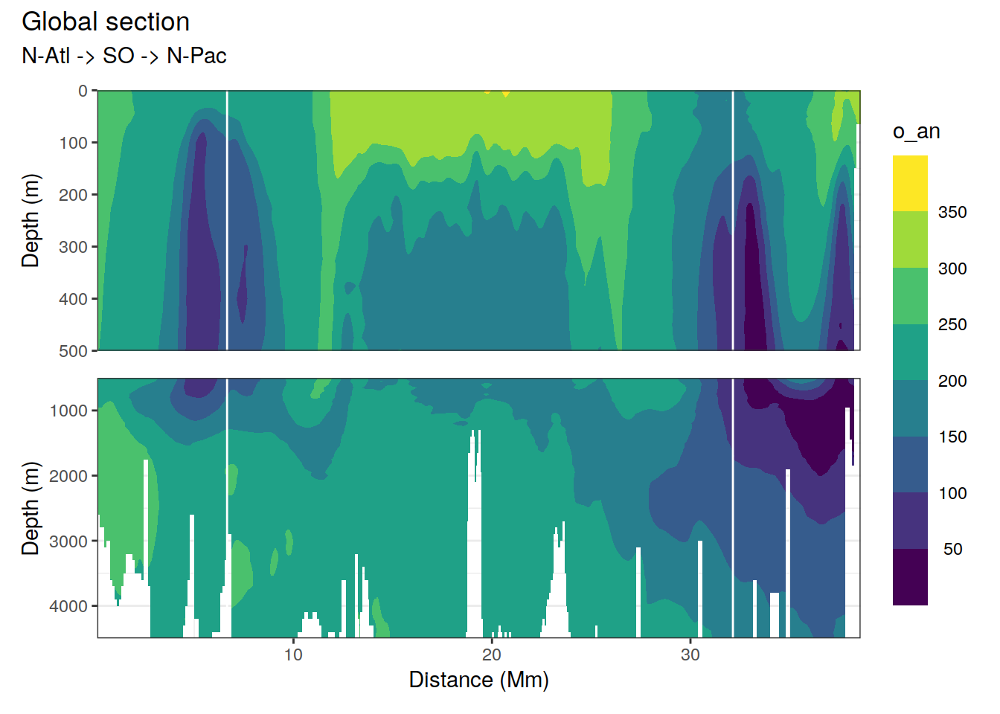
[1] "A_an"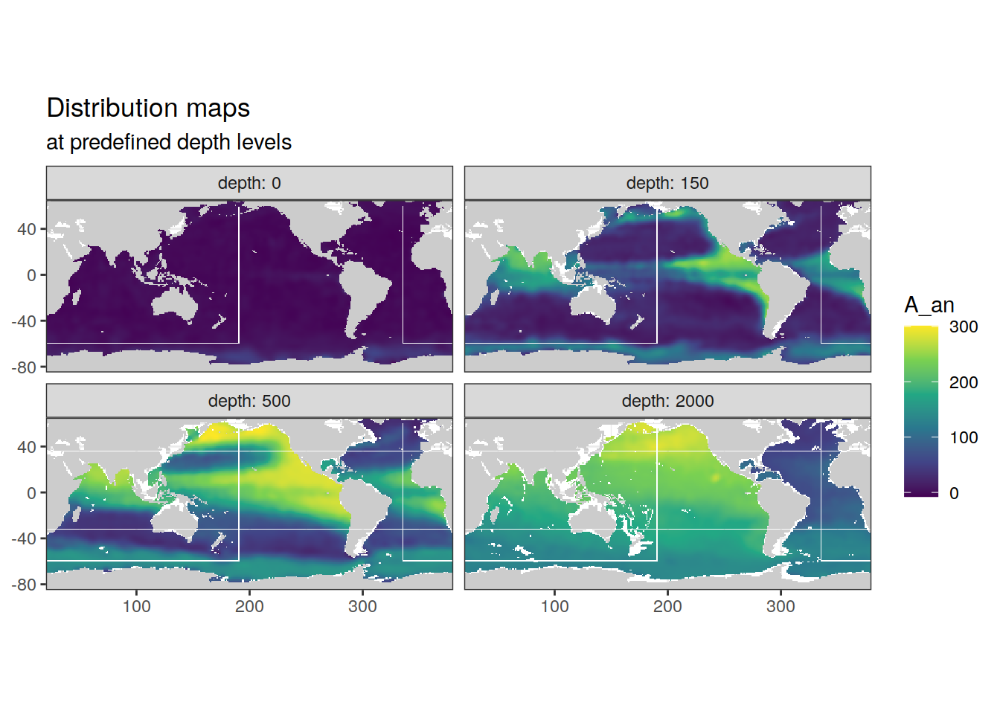
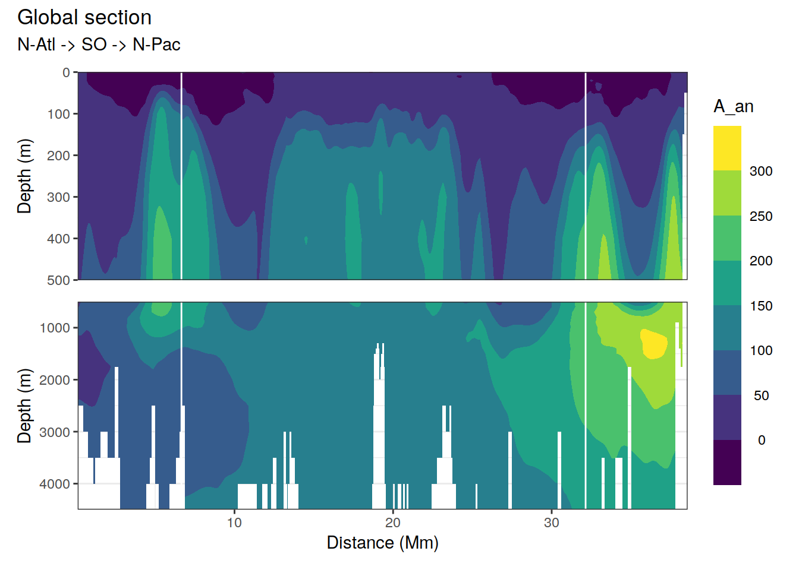
4.2 Write file
WOA18_nuts_O2 %>%
write_csv(paste(path_preprocessing,
"WOA18_nuts_O2.csv",
sep = ""))
sessionInfo()R version 4.0.3 (2020-10-10)
Platform: x86_64-pc-linux-gnu (64-bit)
Running under: openSUSE Leap 15.1
Matrix products: default
BLAS: /usr/local/R-4.0.3/lib64/R/lib/libRblas.so
LAPACK: /usr/local/R-4.0.3/lib64/R/lib/libRlapack.so
locale:
[1] LC_CTYPE=en_US.UTF-8 LC_NUMERIC=C
[3] LC_TIME=en_US.UTF-8 LC_COLLATE=en_US.UTF-8
[5] LC_MONETARY=en_US.UTF-8 LC_MESSAGES=en_US.UTF-8
[7] LC_PAPER=en_US.UTF-8 LC_NAME=C
[9] LC_ADDRESS=C LC_TELEPHONE=C
[11] LC_MEASUREMENT=en_US.UTF-8 LC_IDENTIFICATION=C
attached base packages:
[1] stats graphics grDevices utils datasets methods base
other attached packages:
[1] patchwork_1.1.0 geosphere_1.5-10 oce_1.2-0 gsw_1.0-5
[5] testthat_2.3.2 reticulate_1.18 tidync_0.2.4 forcats_0.5.0
[9] stringr_1.4.0 dplyr_1.0.2 purrr_0.3.4 readr_1.4.0
[13] tidyr_1.1.2 tibble_3.0.4 ggplot2_3.3.2 tidyverse_1.3.0
[17] workflowr_1.6.2
loaded via a namespace (and not attached):
[1] httr_1.4.2 viridisLite_0.3.0 jsonlite_1.7.1 modelr_0.1.8
[5] assertthat_0.2.1 sp_1.4-4 blob_1.2.1 cellranger_1.1.0
[9] yaml_2.2.1 pillar_1.4.6 backports_1.1.10 lattice_0.20-41
[13] glue_1.4.2 digest_0.6.27 RColorBrewer_1.1-2 promises_1.1.1
[17] rvest_0.3.6 colorspace_1.4-1 htmltools_0.5.0 httpuv_1.5.4
[21] Matrix_1.2-18 pkgconfig_2.0.3 broom_0.7.2 haven_2.3.1
[25] scales_1.1.1 whisker_0.4 later_1.1.0.1 git2r_0.27.1
[29] generics_0.0.2 farver_2.0.3 ellipsis_0.3.1 withr_2.3.0
[33] cli_2.1.0 magrittr_1.5 crayon_1.3.4 readxl_1.3.1
[37] evaluate_0.14 fs_1.5.0 ncdf4_1.17 fansi_0.4.1
[41] xml2_1.3.2 tools_4.0.3 hms_0.5.3 lifecycle_0.2.0
[45] munsell_0.5.0 reprex_0.3.0 isoband_0.2.2 compiler_4.0.3
[49] RNetCDF_2.4-2 rlang_0.4.8 grid_4.0.3 rstudioapi_0.11
[53] rappdirs_0.3.1 labeling_0.4.2 rmarkdown_2.5 gtable_0.3.0
[57] DBI_1.1.0 R6_2.5.0 ncmeta_0.3.0 lubridate_1.7.9
[61] knitr_1.30 rprojroot_1.3-2 stringi_1.5.3 Rcpp_1.0.5
[65] vctrs_0.3.4 dbplyr_1.4.4 tidyselect_1.1.0 xfun_0.18